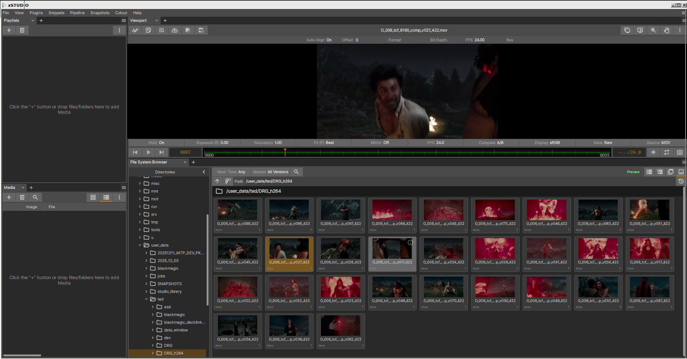
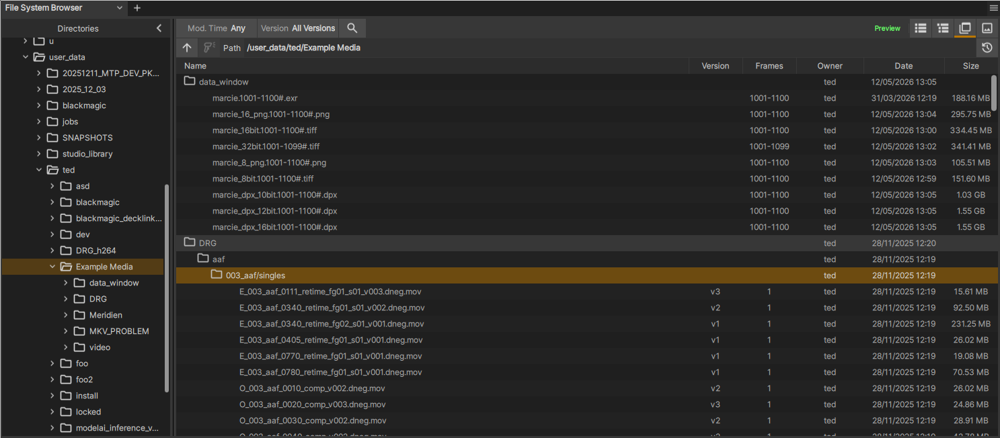

The File System Browser
Note
2026年5月:この機能は Windows 向けにはまだ 完全に 準備が整っていませんが、Mac および Linux ビルドでは利用可能です。Windows への互換性も間もなく提供される予定です。

The File System Browser.
この panel は、ローカルおよびネットワーク上のファイルシステムのためのインターフェースを提供します。左側にはドライブのフォルダー構造をナビゲートするためのディレクトリツリービューが表示され、右側には「フルスキャン」 (再帰的なフォルダー検索) を実行した際に、ディレクトリ内で検出されたメディアおよびそこに含まれるフォルダー内のすべてのメディアを表示する結果 panel が配置されています。
このインターフェースの主な機能は以下の通りです :
すべてのサブフォルダーへの再帰処理を含む、ファイルシステムディレクトリの高速なマルチスレッドスキャン。
迅速な確認を可能にする、メディア項目の即時プレビュー読み込み。
連番画像 (ファイル名にフレーム番号が含まれる多数の個別ファイルで構成される単一のメディア項目) の識別。
最近アクセスしたフォルダーを表示する履歴ボタンと、お気に入りの場所を保存できるユーザーピン留めフォルダー機能。
パスバーに入力する際、ディレクトリ名を自動補完する機能。
高速読み込みに対応したサムネイルビュー。
複数選択したメディアを Playlist または Media List panels へドラッグ＆ドロップで読み込む機能。
現在のプレイリストにメディアを読み込むダブルクリック操作。
指定したメディア項目の場所で通常のファイルシステムブラウザーを開く「Reveal in System Browser (システムブラウザーで表示)」機能。
How to Use the Browser
ブラウザーの左側のセクションは、ファイルシステムのシンプルなツリービューです。ナビゲーションを開始するには、左側のディレクトリビューで次のように操作します :
ディレクトリボタンをクリックすると、そのディレクトリ内 (サブフォルダーは除く) のメディアがスキャンされます。
ディレクトリの横にあるシェブロン (矢印) ボタンをクリックすると、そのディレクトリが展開され、サブフォルダーが表示されます。
ディレクトリの横にある「Full Scan」ボタンをクリックすると、そのディレクトリとすべてのサブフォルダーの ディープスキャン を実行し、メディアを検索します。
「Path」入力ボックスにパスを直接入力またはコピーしてナビゲートすることもできます。
- パス入力ボックスには自動補完機能があります。入力を進めると、一致するサブフォルダーがドロップダウンボックスにリスト表示されます。
上/下矢印キーを使用してサブフォルダーを切り替えます。
サブフォルダーを選択するには、右矢印キーを押し、Enter キーを押します。
あるいは、サブフォルダーのディープスキャンを実行するためにフォルダーを選択した状態で、Path 入力ボックスのすぐ左側にあるディープスキャンボタンをクリックすることもできます。
特定のフォルダーをインスペクトしていて、1 つ上の親フォルダーに移動したい場合は、(Path 入力ボックスの左側にある) 「Up」ボタンを押します。
スキャナーによってメディア項目が見つかると、右側の結果 panel に表示されます。
メディア項目を 1 回クリックすると、xSTUDIO Viewport でプレビューが表示されます。これによりメディアが読み込まれ、再生できるようになります。ただし、この時点ではメディアは xSTUDIO Session には追加されません。
メディア項目をダブルクリックすると、現在のプレイリストに読み込まれます。
CTRL キーまたは SHIFT キーを押しながらメディア項目をクリックすると、複数選択が行えます。
File System Browser インターフェースから、選択した項目を Playlist/Subset/Contact Sheet/Timeline にドラッグ＆ドロップして追加します。
選択した項目を Media List にドラッグ＆ドロップすると、現在インスペクトされている Media List (Playlist、Subset など) に追加されます。
ツリー、グループ、サムネイルの各ビューでは、メディア項目は親フォルダーの下にリスト表示されます。フォルダー自体を Playlist や Media List にドラッグ＆ドロップして、そのフォルダー内 (すべてのサブフォルダーを含む) のすべてのメディア項目を読み込むことも可能です。
Note
ディレクトリツリーでディレクトリをクリックした際、その子フォルダーはすぐにはスキャンされません。クリックしたフォルダー内で見つかったメディアのみが表示されます。すべてのサブフォルダーのディープスキャンを実行するには、そのフォルダーの「Full Scan」ボタンをクリックしてください。
Note
フルスキャンを実行せず、メディアが見つからなかった場合でも、まだ探索できるサブフォルダーが存在するときは、右側の panel にフルスキャンを実行するためのボタンが表示されます。
Note
フルスキャンを実行しておらず、クリックしたフォルダー内でいくつかのメディアが検出された場合、(さらにメディアを含んでいる可能性のあるサブフォルダーが存在していても) フルスキャンボタンは表示されません。この場合は、パス入力ボックスのすぐ左側にある「Deep Scan」ボタンをクリックしてください。
View Modes
ブラウザーには 4 つの表示モードがあります。フラットリスト、完全なディレクトリ階層を表示するツリー、一部を圧縮したディレクトリビューを表示するグループ、そしてサムネイルビューです。

The list interface.
{kind=link}

The grouped interface.

The thumbnail interface.
File System Browser Walkthrough
この短い動画では、ナビゲーションや読み込みを含む、File System Browser の使用方法をデモしています。